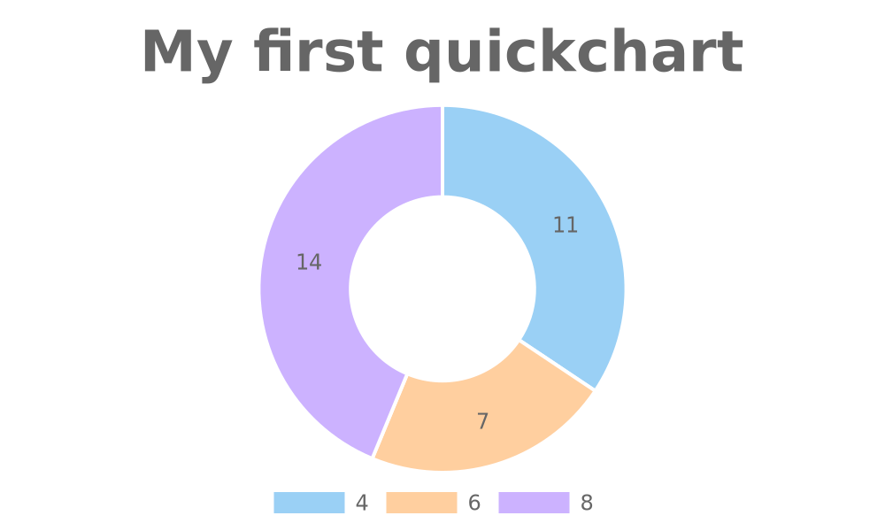
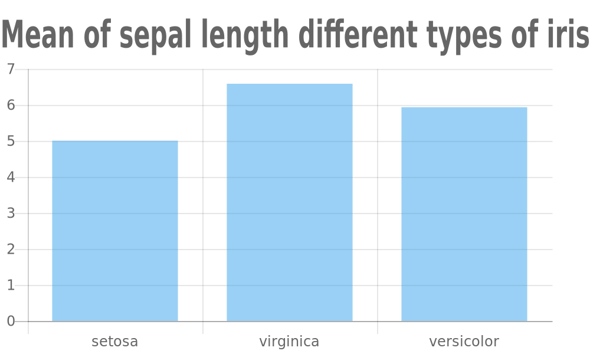
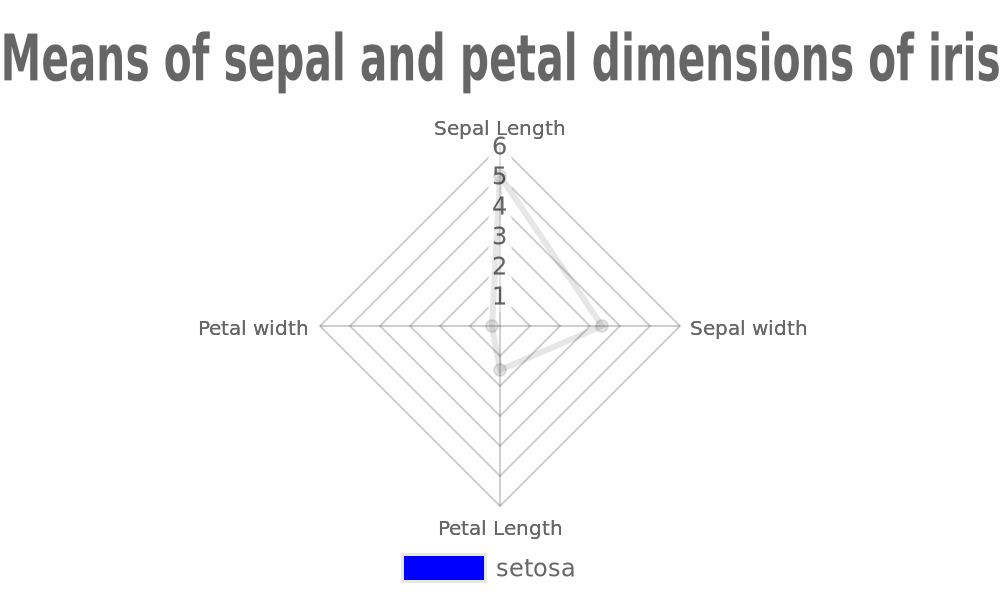
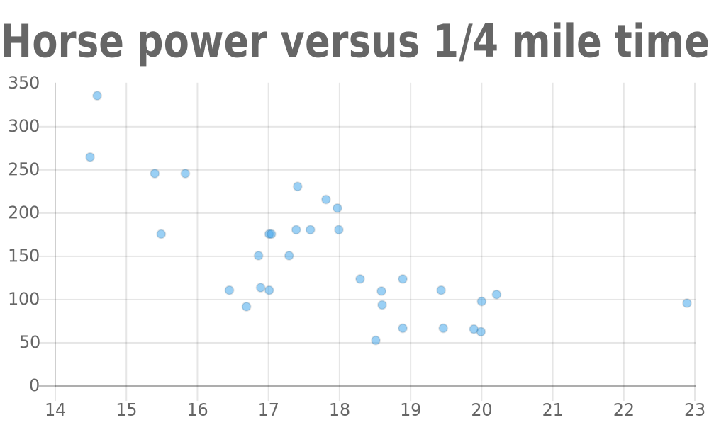
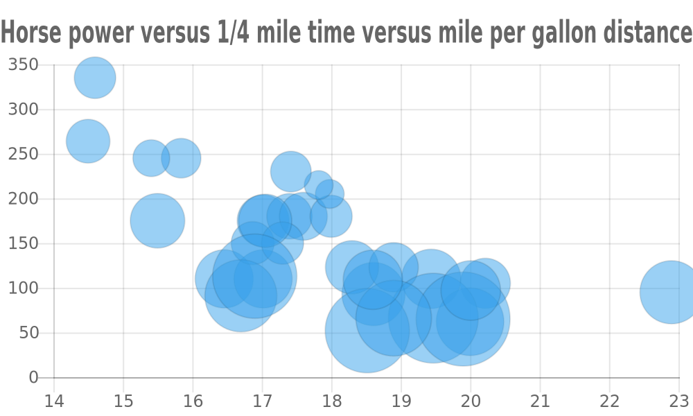
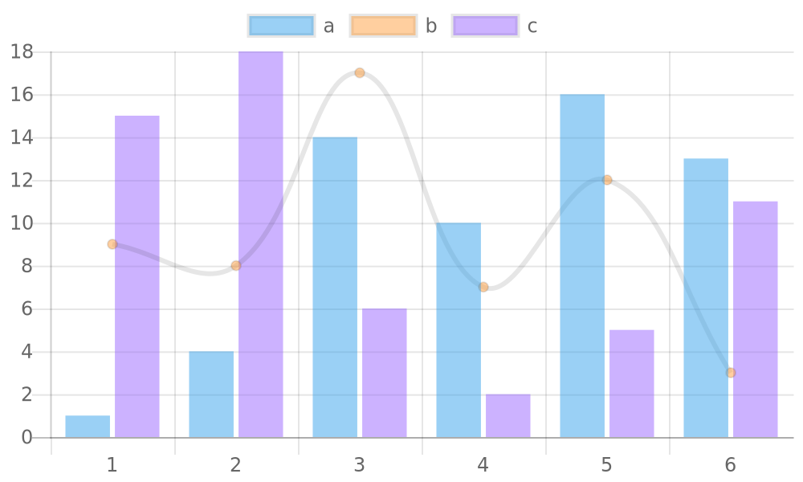

vignettes/quickchartR.Rmd
quickchartR.RmdQuickchart.io is a powerful application which provides fine and fast charts of different types. The problem is that the way of creating charts is based on a specific URL form, what is not convenient for example big datasets. To improve functionality we have developed quickchartR (pronounce quickcharter), which enables using R language to create Quickchart objects. In quickchartR You can create every type of chart from Quickchart.io except Sparklines ( See why quickchartR does not support Sparklines):
In the following examples we are working with widely known data from Iris and mtcars datasets which are built in R.
We’d like to create a pie chart as simple as possible. This chart will show number of cars with a specific number of cylinders in the database. In order to do so, we need to prepare data:
inputDataPie = data.frame(
mtcars %>% count(cyl),
myLabelColumn = rep(c("number od cylinders"),3)
)
inputDataPie
#> cyl n myLabelColumn
#> 1 4 11 number od cylinders
#> 2 6 7 number od cylinders
#> 3 8 14 number od cylindersThen we can use quickchartR() method to plot a chart:
browseURL(
quickchartR(
types = "pie", # type of a chart
inputData = inputDataPie, # name of dataset (e.g. dataframe)
xData = cyl, # X-axis data
yData = n, # Y-axis data
labels = myLabelColumn #labels
)
)Our result:

A doughnut chart requires the same data. Let’s append some details, for example a title for the chart.
myOptions = list(
title = list( # list of title's options
display = TRUE, # visibility
text = "My first quickchart", #text
fontSize = 32
),
legend = list(position = "bottom")) #possible values: botton, top, left, right, falseAs You see type myOptions is list which contains another lists. The result is shown below:
browseURL(
quickchartR(
types = "doughnut",
inputData = inputDataPie,
xData = cyl,
yData = n,
labels = myLabelColumn,
options = myOptions,
base64 = F
)
)
Please note we add “base64” argument as FALSE which causes that a hyperlink to the chart is not encoded.
Another useful type of chart is barchart. Ours will show difference of mean sepal length for three iris species from iris dataset. To achieve that we need to prepare data:
data <- iris
head(data)
#> Sepal.Length Sepal.Width Petal.Length Petal.Width Species
#> 1 5.1 3.5 1.4 0.2 setosa
#> 2 4.9 3.0 1.4 0.2 setosa
#> 3 4.7 3.2 1.3 0.2 setosa
#> 4 4.6 3.1 1.5 0.2 setosa
#> 5 5.0 3.6 1.4 0.2 setosa
#> 6 5.4 3.9 1.7 0.4 setosamean_setosa_sepal_length<-mean(data[data$Species=="setosa",1])
mean_virginica_sepal_length<-mean(data[data$Species=="virginica",1])
mean_versicolor_sepal_length<-mean(data[data$Species=="versicolor",1])
mean_vector<-c(mean_setosa_sepal_length,mean_virginica_sepal_length,mean_versicolor_sepal_length)
mean_vector
#> [1] 5.006 6.588 5.936
inputData2 = data.frame(
myXColumn =c("setosa","virginica","versicolor"),
myYColumn = mean_vector,
myLabelColumn = rep("Iris", 3)
)
myOptionsb = list(
title = list(
display = TRUE,
text = "Mean of sepal length for different types of iris",
fontSize = 32
),
legend = list(position = "false"))browseURL(
quickchartR(
types = "bar",
inputData = inputData2,
xData = myXColumn,
yData = myYColumn,
labels = myLabelColumn,
options=myOptionsb
)
)
Note: There are some issues regarding using radarchart in Google Chrome.
For setosa species we will show all mean dimensions for petals and sepals. In addition we add our own color pallete.
dt<-data[data$Species=='setosa',] %>% group_by(Species) %>% summarise_at(1:4, mean) #dplyr magic here
inputData3 = data.frame(
myXColumn =c("Sepal Length","Sepal width","Petal Length","Petal width"),
myYColumn = as.vector(t(dt[,-1])),
# = c(1,2,3,4),
myLabelColumn = c(rep("setosa", 4))
)
myOptionsr = list(
title = list(
display = TRUE,
text = "Means of sepal and petal dimensions of iris",
fontSize = 32
),
legend = list(position = "bottom"))detailedOptions = list(list(fill='true'))
browseURL(
quickchartR(
types = "radar",
inputData = inputData3,
xData = myXColumn,
yData = myYColumn,
#rData = myRColumn,
labels = myLabelColumn,
options=myOptionsr,
detailedOptions=detailedOptions,
colors = c("blue","red"),
base64 = F
)
)
Please note that a radarchart could be misleading if you use incomparable types of data (for example a horse power for an engine and dimensions of a car.)
We can also create a basic scatter plot:
inputDataScatter = data.frame(
myYColumn =mtcars$hp,
myXColumn = mtcars$qsec,
myLabelColumn = rep(c(" "),length(mtcars[,1]))
)
myOptionss = list(
title = list(
display = TRUE,
text = "Horse power versus 1/4 mile time",
fontSize = 32
),
legend = list(position = "false"))browseURL(
quickchartR(
types = "scatter",
inputData = inputDataScatter,
xData = myXColumn,
yData = myYColumn,
rData = myRColumn,
labels = myLabelColumn,
options=myOptionss,
base64 = F
)
)
A bubble plot is a variant of a scatter plot, but it contains additional information represented by a size of the bubble.
inputDataBubble = data.frame(
myYColumn =mtcars$hp,
myXColumn = mtcars$qsec,
myRColumn = mtcars$mpg,
myLabelColumn = rep(c(" "),length(mtcars[,1]))
)
myOptionsbb = list(
title = list(
display = TRUE,
text = "Horse power versus 1/4 mile time versus mile per gallon distance",
fontSize = 22
),
legend = list(position = "false"))browseURL(
quickchartR(
types = "bubble",
inputData = inputDataBubble,
xData = myXColumn,
yData = myYColumn,
rData = myRColumn,
labels = myLabelColumn,
options = myOptionsbb,
base64=F
)
)
QuickchartR allows also to present different charts in one space, called a mixed chart. Data are grouped by their labels and a types argument becomes a vector of strings.
types = c("bar", "line", "bar")
detailedOptions = list(list(), list(fill = "false"), list())
inputDataMix = data.frame(
myXColumn = rep(1:6, 3),
myYColumn = sample(1:18, 18),
myLabelColumn = rep(letters[1:3], 6)
)browseURL(
quickchartR(
types = types,
inputData = inputDataMix,
xData = myXColumn,
yData = myYColumn,
labels = myLabelColumn,
detailedOptions = detailedOptions,
base64 = F
)
)
In its assumption of “simplicity” which ignores labels, axis etc. sparkline chartit is considered a terrible data visualization practice. Even though it is usually used e.g. inside a table to minimize the eye-candy and with a common axis with other charts, implementing it here would cause someone who is not familiar with advanced data visualization and good practices to make a mistake (e.g. by using it regardless of its true purpose). It is assumed that professional data scientists do NOT use Quickcharts for their charts because they have their own advanced tools for it. Therefore, to somehow control and help the newbie data visualizators, sparkline chart is NOT included in quickchartR.